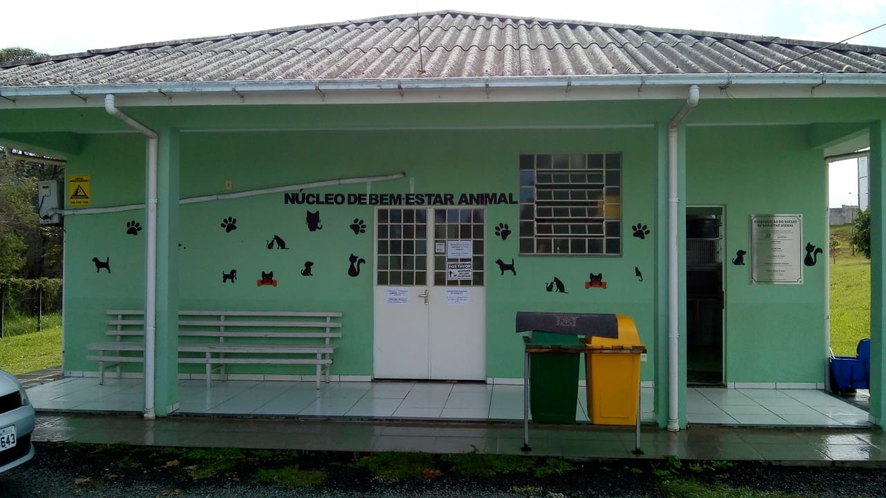

📍 Cidade: Criciúma - SC
📍 Localização: Bairro Bosque do Repouso
📞 Telefone: (48) 3431-0000
📧 Email: zoonoses@criciuma.sc.gov.br
O Centro de Controle de Zoonoses de Criciúma atua na proteção da saúde pública, realizando o controle e prevenção de doenças transmitidas entre animais e humanos. A unidade desenvolve ações como vacinação, monitoramento de áreas de risco, controle de vetores e orientação à população. Além disso, o centro auxilia em situações envolvendo animais que possam representar risco à saúde, contribuindo para uma cidade mais segura e consciente.
⚠️ Importante: O local não funciona como abrigo de animais, sendo um órgão voltado exclusivamente à saúde pública e controle sanitário.
Entrar em Contato